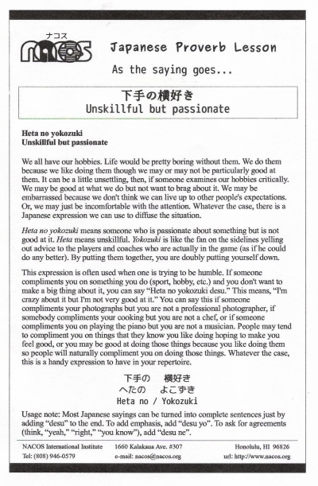

Heta no yokozuki
Unskillful but passionate
We all have our hobbies. Life would be pretty boring without them. We do them because we like doing them though we may or may not be particularly good at them. It can be a little unsettling, then, if someone examines our hobbies critically. We may be good at what we do but not want to brag about it. We may be embarrassed because we don't think we can live up to other people's expectations. Or, we may just be incomfortable with the attention. Whatever the case, there is a Japanese expression we can use to diffuse the situation.
Heta no yokozuki means someone who is passionate about something but is not good at it. Heta means unskillful. Yokozuki is like the fan on the sidelines yelling out advice to the players and coaches who are actually in the game (as if he could do any better). By putting them together, you are doubly putting yourself down.
This expression is often used when one is trying to be humble. If someone compliments you on something you do (sport, hobby, etc.) and you don't want to make a big thing about it, you can say “Heta no yokozuki desu.” This means, “I'm crazy about it but I'm not very good at it.” You can say this if someone compliments your photographs but you are not a professional photographer, if somebody compliments your cooking but you are not a chef, or if someone compliments you on playing the piano but you are not a musician. Basically, you can use this to respond to anything someone compliments you on that you wish to be humble about. People may tend to compliment you on things that they know you like doing hoping to make you feel good, or you may be good at doing those things because you like doing them so people will naturally compliment you on doing those things. Whatever the case, this is a handy expression to have in your repertoire.
Usage note: Most Japanese sayings can be turned into complete sentences just by adding “desu” to the end. To add emphasis, add “desu yo”. To ask for agreements (think, “yeah,” “right,” “you know”), add “desu ne”.

| © 1995-2013 NACOS International Institute. All Rights Reserved. |